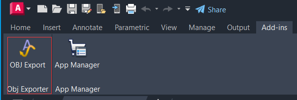
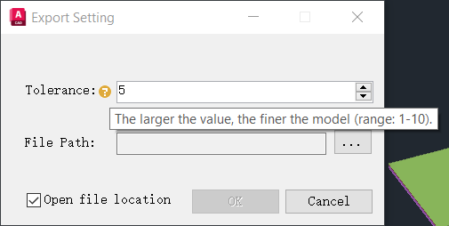
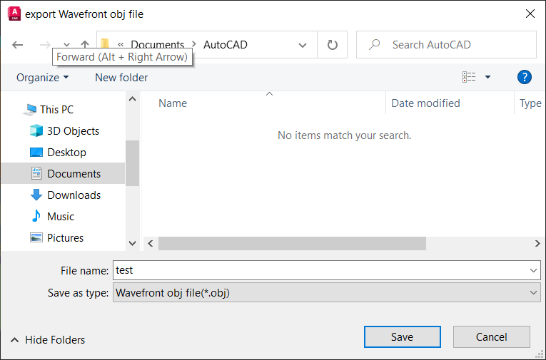

OBJ Exporter is an AutoCAD plugin that exports 3D models to OBJ files. Now this plugin just sale 1$! If necessary, please contact me (africchang@gmail.com) to obtain the source code. Below is the screenshots of the plugin:


